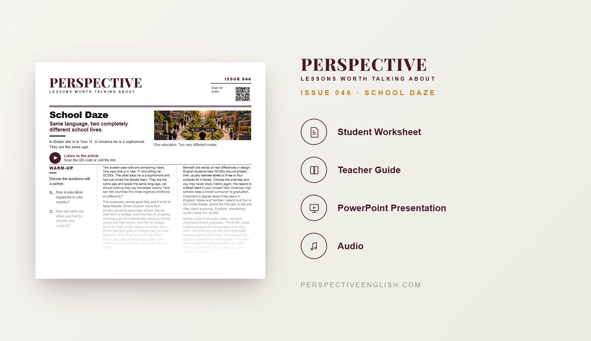

ISSUE 046
School Daze ESL Lesson
One education. Two very different routes.
A ready-to-teach advanced ESL lesson comparing British and American education, from GCSEs and A-levels to college, university and the choice between specializing early or keeping your options open.
CHOOSE YOUR LEVEL
Collection 09 includes Issues 046–050.
LESSON PREVIEW

ABOUT THIS LESSON
About This UK vs US Education ESL Lesson
Why do British and American students of the same age describe such different school lives? This C1–C2 School Daze lesson explores the terminology and structure of both education systems, including years and grades, sixth form, college, university and GCSEs.
Students examine how British learners typically narrow their subjects for A-levels, while American students follow a broader curriculum for longer. They also compare degree lengths, consider the benefits and risks of early specialization, and practice five advanced expressions from the article.
The lesson goes beyond comparing terminology. Students debate which approach serves different learners best, design a school system for a new country, defend their decisions against objections, and evaluate what a country’s education system reveals about its values.
FROM THE ARTICLE
WHAT'S INCLUDED
What's Included in This School Daze ESL Lesson?
- Magazine-style C1–C2 advanced ESL student worksheet
- Original advanced reading comparing British and American education, with matching audio
- Five advanced expressions and five true-or-false comprehension questions
- Five discussion questions about subject choices, school terminology and education values
- Deep or Wide? critical-thinking activity: agree on which education system best serves six different students
- Language in Context: false friends, narrow down, keep your options open, a head start and a well-rounded education
- Speaking challenge: design a new country’s school system, then defend your choices against objections
- 200–250 word opinion-writing task addressing the strongest opposing view
- Teacher guide, complete answer key and model writing
- Ready-to-use classroom presentation
Get the complete C1–C2 School Daze ESL lesson individually, or get Issues 046–050 together in Perspective Collection 09.
Ready to Teach School Daze?
Get the complete C1–C2 School Daze ESL lesson individually, or get Issues 046–050 together in Perspective Collection 09.
Secure checkout and instant digital delivery through Payhip.